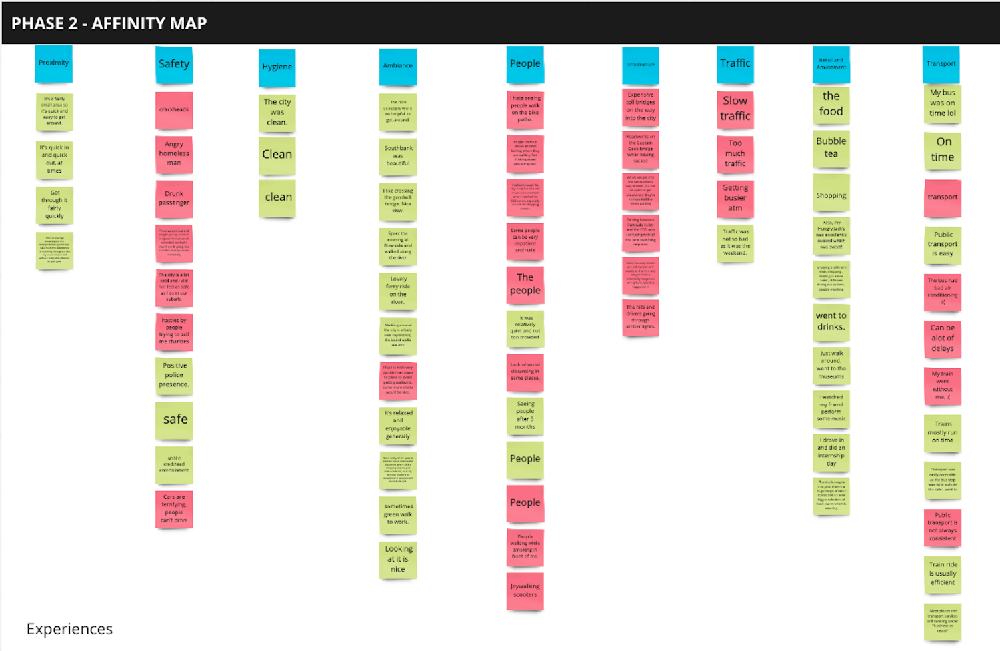
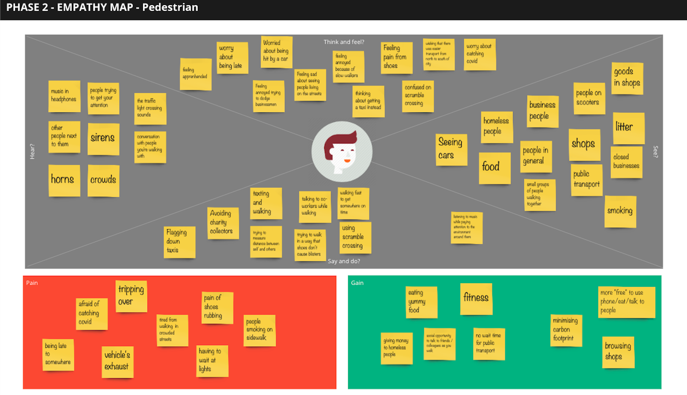
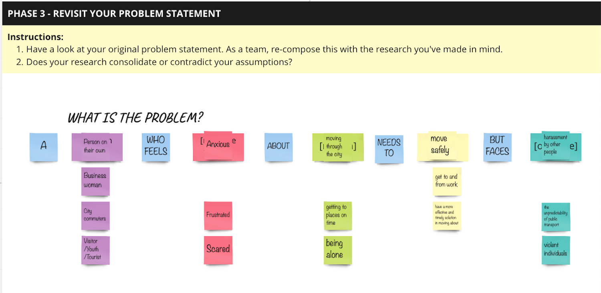
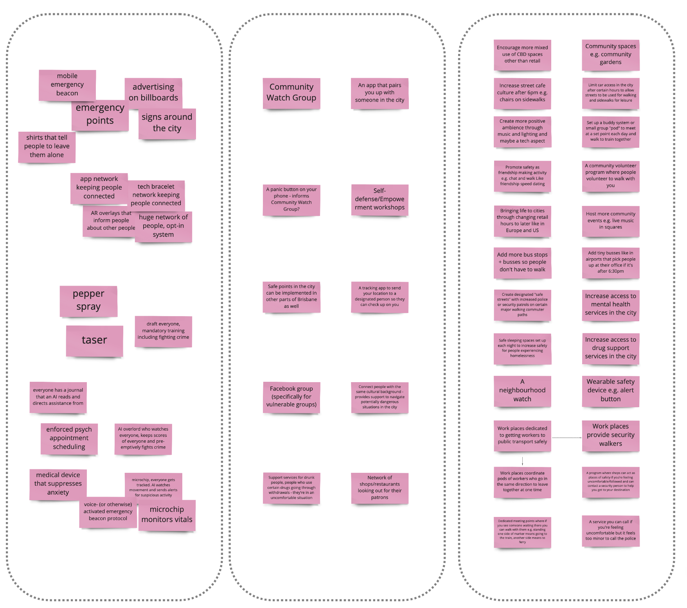
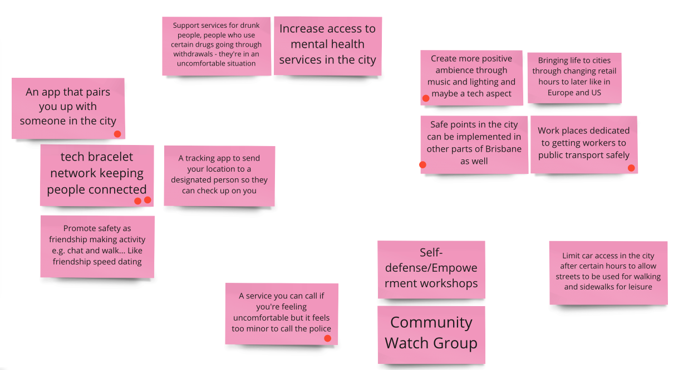
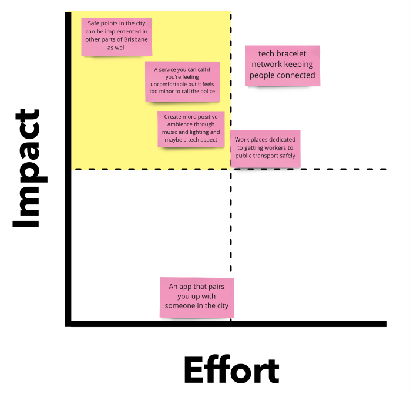
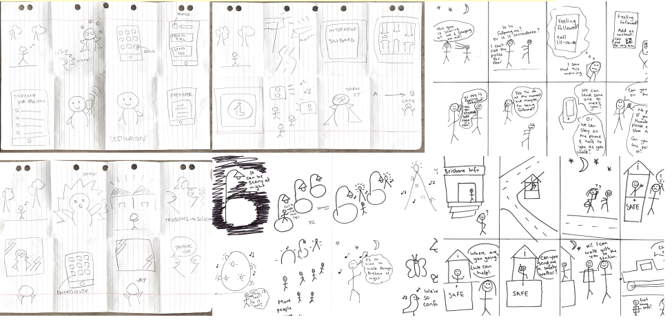
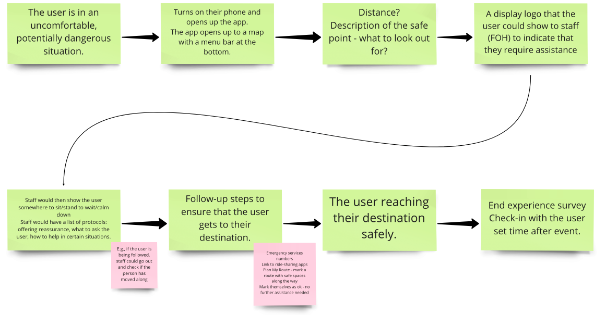
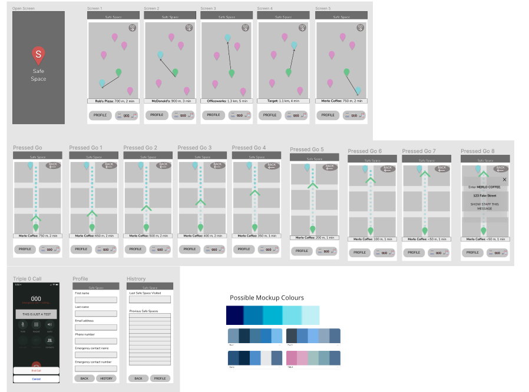

FUEL PROGRAM
Collaborative Project. UXR/UXD
- The Problem
- The Process
- The Outcome
- Reflection
The Problem:
The FUEL Entrepreneurship Program is a co-curricular program run by The Foundry at QUT.
This project is a multidisciplinary, collaborative group project designed to improve the safety of individuals as they move throughout Brisbane city. Through our research we discovered that many people felt uncomfortable when walking or taking public transport in the city. We came across a number of stories of individuals being followed, made to feel uncomfortable or witnessing violent behaviour that they felt put them in danger.
The project has given me the opportunity to practice my user experience research skills and to experience project management first hand.
Throughout the project the team of Nhi Lam, Owen Claxton and myself have been collaborating both synchronously and asynchronously through the use of Miro and Figma.
The Process:
Throughout the project we have followed the IDEO Design Thinking Process:
- Empathise
- Define
- Ideate
- Prototype
- Test
- Iterate
We began to develop empathy for people commuting through Brisbane city by conducting a survey and analysing the results using affinity maps.
We looked at issues surrounding safety, transport and attitudes towards autonomous vehicles
You can experience the survey here.
Originally we had the assumption that traffic was a real issue for people moving through the CBD but as we analysed the results using affinity maps we realised that many people were actually more concerned for their physical safety.
We also used empathy maps to help us envision what our potential users might be experiencing whilst in the city.
From our empathy maps we then went on to create driver and pedestrian proto personas.
Completing the proto persona for our pedestrian really highlighted for us some of the safety aspects that had come up in our survey.
Through this process we felt the opportunity was there to pivot and redefine our problem statement.
After re-defining the problem statement we then developed a number of "how might we" statements.
We silently voted using "sticky dots" on the statements we felt had the most opportunity to explore and further develop through ideation.
The ideation stage was a chance to use our skills in creativity and think as broadly as possible for ways in which we could solve the issue of personal safety.
We began with a warm up by suspending disbelief and ideating without restrictions. No idea was too crazy or unrealistic at this stage.
From there we used the SCAMPER method to create a mass of ideas by recombining and building on our existing ideas and each others ideas.
We then prioritised our ideas and grouped like ideas together. Once again we used sticky dots to vote on the concepts we felt were most promising. Our ideas ranged from wearables, to workshops to changing the ambience of the city
We then used the Impact/Effort matrix to help us work out which ideas might be the most feasable
To help us further understand the possibilities of our most highly rated ideas on the Impact/Effort matrix we used Crazy Eights to quickly sketch out possible scenarios of use. These helped us to whittle down our ideas to a favourite idea from each team member.
These favourite ideas were further sketched and explored to create an art gallery piece
We each displayed our art gallery pieces, pitched our concepts to each other and performed a round of speed critiquing, voting on aspects that we liked, offering each other feedback and coming up with ideas for how each project could be further developed
We then voted a final time to decide which idea to develop further and chose to move forward with designing an app.
We then created a text based story board to ensure we were all on the same page in terms of user experience and the flow/features of the app
Using Figma we were able to collaboratively create a wireframe ready for user testing
Using the wireframe we had created we were able to conduct user testing. We had a number of userful discoveries in user testing which led to some UI changes and also resulted in the addition of the feature to call an emergency contact.
We used the feedback from this user testing to iterate on our concept and design a higher fidelity prototype in Figma
You can try out the prototype here
The Outcome:
Our final solution is the Safe Space app, designed to help people find a safe space where they can step off the street if feeling uncomfortable without the expectation of having to make a purchase from the establishment
Users are able to quickly find the nearest safe space, or choose a space safe they are familiar with, and follow directions to find the space
The app offers users a sense of safety and comfort in a situation that has not escalated enough to warrant a police call.
Upon entering the space the user is able to show a message to any staff members present allerting the staff to the fact that this person needs an opportunity to get off the street. We envision staff of businesses that have signed up to the program being able to offer the individual reassurance, a safe space from which to check if they are being followed and most importantly an opportunity to recover from the anxiety of the situation.
The app also features the ability to quickly dial emergency services and encourages users to get in touch with an emergency contact such as a family member or friend if they are feeling uncomfortable.
We chose a colour palette of a strong blue based on the psychology of colours. The colour is supposed to encourage feelings of calm and safety. Merriweather was chosen as a font for it's warmth and comforting feel.
Reflection:
I have improved my communication skills and become more aware of when I am using design jargon. I've also had the opportunity to facilitate a number of design exercises for my team which has led to the realisation that I really enjoy facillitation and project management.
I've been fascinated to see how many design activities have been able to be recreated digitally through the use of Miro. It's been really great to experience working as part of a remote team and to practice both synchronous and asynchronous communication, similar to if we were working for a fully remote company.
Most importantly this project has taught me how UX Research skills apply to the real world. It's been exciting to learn about entrepreneurship and to see how the skills I have been learning throughout my degree could apply to real world problems.